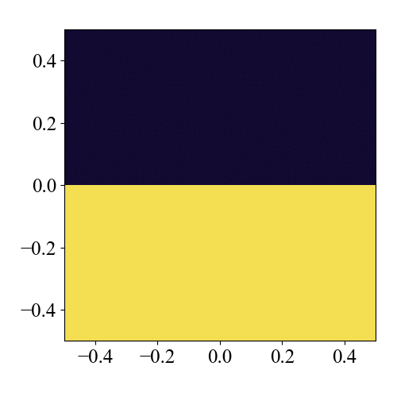

2D HD Test: Kelvin-Helmholtz Instability
The Kelvin-Helmholtz instability problem. This instability occurs when flows with different velocities above and below a given interface are in contact. For visualization, the density is different above and below.
Location
demo/hd2d_kelvin_helmholtz/
Geometry
\(-0.5 \leq x \leq 0.5\)
\(-0.5 \leq y \leq 0.5\).
Initial Conditions
The initial condition is described by the upper and lower states separated at \(y=0.0\) and a uniform pressure \(p=2.5\). The ratio of specific heats is \(\gamma = 1.4\).
Boundary Conditions
A periodic boundary condition is imposed in the \(x\) direction, and a symmetric boundary condition is imposed on all variables in the \(y\) direction. Note that if you set the periodic boundary flag in the \(x\) direction to true in config.yaml, the symmetric boundary condition no longer works.
domain:
periodic:
x: true # when this flag is true, the symmetric boundary condition does not work
Results
A Python script for visualization is provided. The plots of the results are saved in demo/hd2d_kelvin_helmholtz/figs.
cd demo/hd2d_kelvin_helmholtz
python plot_data.py

3D Version
The extension to 3D is achieved simply by setting k_size to a value larger than 1 in the configuration file config.yaml.
# config.yaml
grid:
i_size: 512
j_size: 512
k_size: 512 # change from 1 to 512